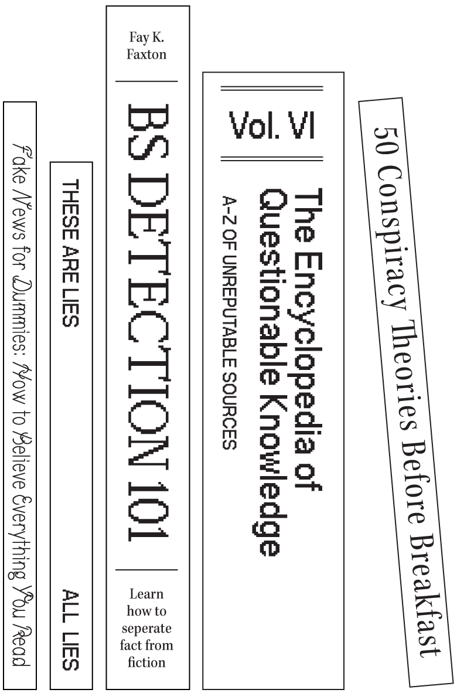
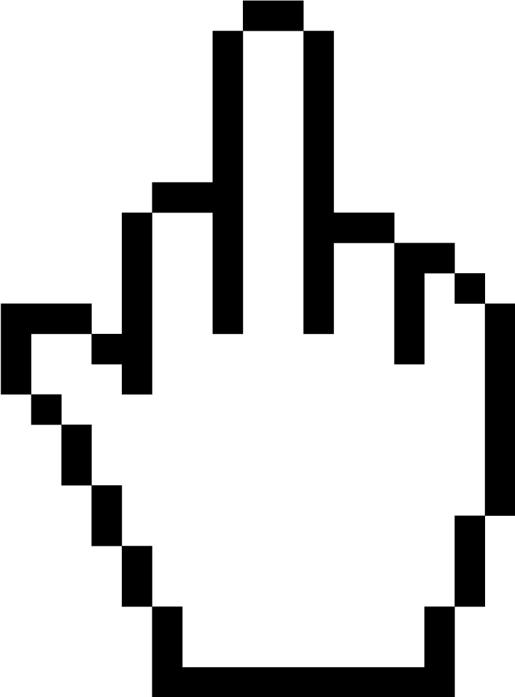
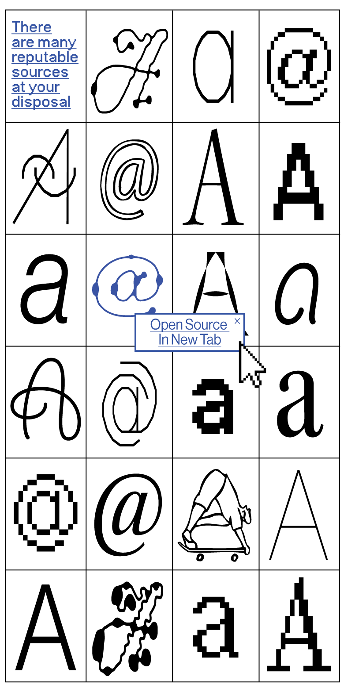
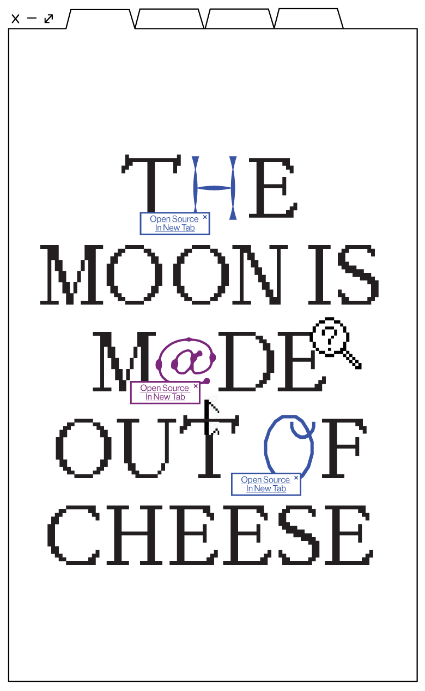
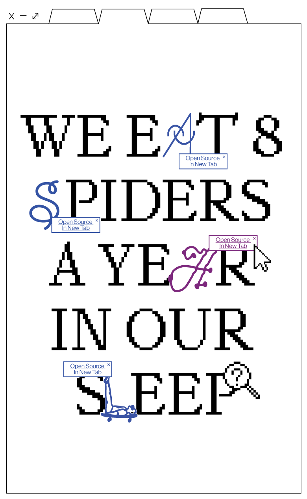
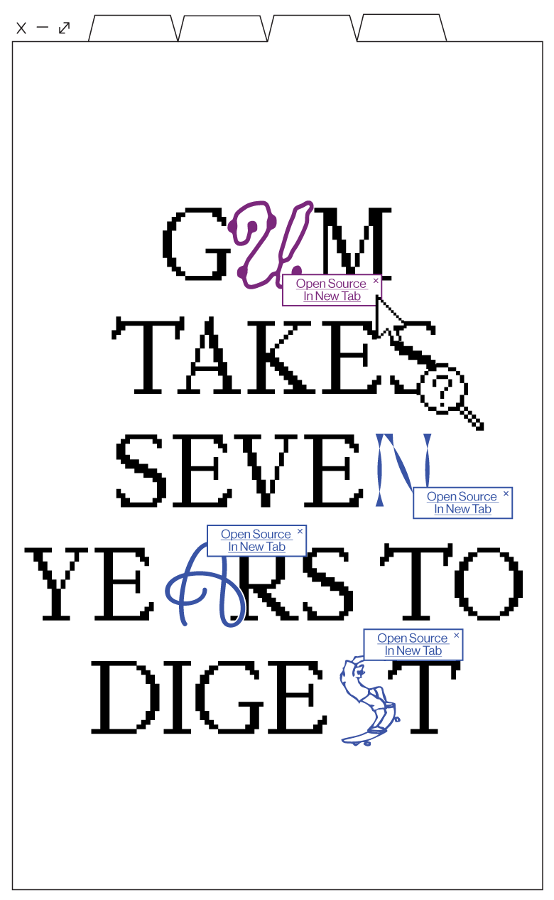
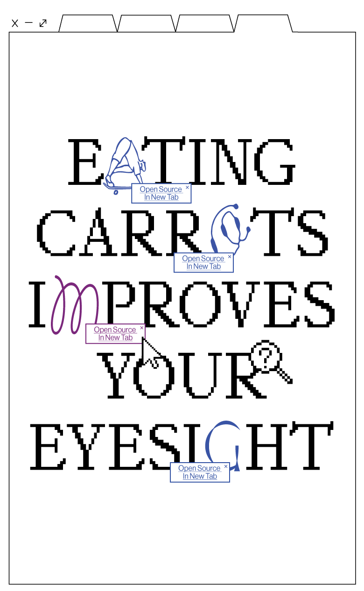

(in terms of critical thinking and preventing misinformation)
Always assess the credibility of the source. Look for reputable websites, institutions, and authors.
Verify information from multiple trustworthy sources before accepting it as fact.
Before accepting information, ask critical questions such as “Is there an alternative explanation?”
Keep up with current events and ongoing news to have a better context for evaluating information.
Be aware of your own biases and seek out diverse viewpoints and sources to avoid confirmation bias.
Stick to reputable search engines like Google to minimise exposure to false information.
Check source credibility
Cross reference sources
Ask questions
Stay informed
Mindful of echo chambers
Trusted search engines
a
simple
internet
literacy
guide
to

This is your stance on preventing the spread of misinformation.
Have a think, do you want to spend the rest of your life being less wrong? (Trust me, a little fact checking goes a long way in preventing those awkward “Oh, really? I didn’t think that was true” moments at social gatherings.
Have a think, do you want to spend the rest of your life being less wrong? (Trust me, a little fact checking goes a long way in preventing those awkward “Oh, really? I didn’t think that was true” moments at social gatherings.
DECISION
FLOW
CHART
DECISION
FLOW
CHART
Misinformation can be harmful as it spreads quickly online, distorting facts and fuelling confusion. Thus, it can have severe real-world consequences.
In a world flooded with information, being a critical thinker helps you tell fact from fiction.
In a world flooded with information, being a critical thinker helps you tell fact from fiction.
(False or misleading information, often unintentionally shared, causing misconceptions)
?
mis
mis
info
ion
ion
mat
info
mation
mation
noun
[muh·sin·fuh·may·shn]

(Filter Facts
From Fiction)
To Encourage
Critical
Thinking
And Combat
The Spread Of
Misinformation
From Fiction)
To Encourage
Critical
Thinking
And Combat
The Spread Of
Misinformation
ARCH
RESE
DAMN
YOUR
DO
.png)
Don’t always accept information as true as you will fall victim to misinformation
Approach online information sceptically. This skill fosters informed choices, problem-solving, and helps you to discern the truth from falsehood.
Remember that internet literacy is an ongoing process. Continuously refine your skills in research and critical thinking to become a better consumer of online information.

critical
thinking
Internet sources should be taken with a grain of salt
But how do i know
which
are
sources
reputable
?
Check the Website Domain
(.gov, .edu, .org)
(.gov, .edu, .org)
Established news outlets, educational institutions and government websites tend to have more credible domains.
Ensure that the information is up-to-date. Some topics may change rapidly, so recent content is often more reliable.
Determine who wrote the content. Trustworthy sources typically provide author names.
Check if the website’s primary goal is to inform or generate
ad revenue.
ad revenue.
Be cautious of sources that use inflammatory or biased language to manipulate emotions.
If something seems too good to be true or doesn’t align with your common sense, be cautious and investigate further.
Verify the Publication Date
Look for Authorship
Beware of Clickbait and Advertisements
Evaluate the Tone and Language
Trust Your Gut Instinct
MIS
INFORMED

Research empowers us to discern fact from fiction, strengthening our defence against misinformation. In the age of information, research is our shield against deception.





Question your sources
Don’t believe everything you read
Think before you share
Filter facts from fiction
Misinformation can be harmful so...
ARCH
RESE
DAMN
YOUR
DO